Purkynì: Podobizna kováøe Jecha (Politizující kováø)
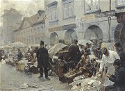
Marold: Vajeènı trh v Praze
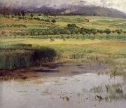
Chittussi: Rybník Utopenec
|
ÈESKİ REALISMUS
Realistické tendence nacházíme u� v satirách Karla Havlíèka Borovského, prózách Bo�eny Nìmcové a dílech Jana Nerudy. Realismus se zde mísí s dalšími vlivy – politickou anga�ovaností, idealizací nebo biedermeierskou drobnokresbou.
Kritickı realismus se v Èechách prosadil o nìkolik desetiletí pozdìji ne� ve svìtì. První díla v tomto duchu vznikala od 80. let 19. století. Hlavním proudem byla venkovská próza (Nováková, Stašek, Rais, Holeèek, Klostermann...). Jednotliví autoøi se vìtšinou zamìøují na konkrétní oblast, kterou dùkladnì znali (Baar na Chodsko, Klostermann na Šumavu). Popisují mezigeneraèní konflikty (Vıminkáøi), rozvrstvení venkovské spoleènosti (Naši) a její vliv na mezilidské vztahy, tradice a sociální problémy. Téma mìstského prostøedí byly ménì èasté (Herrmann). Nìkdy se i kritiètí realisté uchylovali k idealizujícím námìtùm (Pantáta Bezoušek, Otec Kondelík a �enich Vejvara). Jan Herben vydával èasopis Èas (Besedy èasu) (1896-1914), ve kterém publikoval své básnì Machar nebo Bezruè (Slezské èíslo). Stoupence si v Èechách našel rovnì� naturalismus (Èapek-Chod, Šlejhar, bratøi Mrštíkové).
Nejvıznamnìjšími realistickımi malíøi byli Antonín Chittussi (1847-1891), Karel Purkynì (1834-1868), Adolf Kosárek (1830-1859), Viktor Barvitius (1834-1902), Ludìk Marold (1865-1898) nebo Jakub Schikaneder (1855-1924).
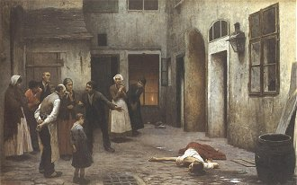
Schikaneder: Vra�da v domì
|
Politickı a vìdeckı realismus
Realismus se projevil i v jinıch oblastech. Politickı a vìdeckı realismus vyznával Tomáš Garrigue Masaryk (1850-1937), poslanec v øíšské radì a pozdìjší prezident. Kolem jeho èasopisu Athenaeum (1883-1893) se zformovala skupina mladıch vìdcù. Ti podrobili kritickému rozboru Rukopis královédvorskı a zelenohorskı a k velké nelibosti vlastencù oba oznaèili za padìlky. Od roku 1886 v Athenaeu vycházely jejich rozbory sociologické (Masaryk), jazykové (Gebauer), historické (Goll), estetické (Hostinskı) nebo literární (Vlèek). Na Athenaeum navázal novı Masarykùv èasopis Naše doba (1893-1949).
Co víš o Masarykovì pùsobení do vzniku samostatného Èeskoslovenska?
Která Masarykova díla znáš?
Mìl by bıt prezident vìdec? Proè?
Které vlastnosti by mìl mít prezident? Mìl je Masaryk?
Proè si zvolil jméno Garrigue?
Zjisti nìco o Masarykovıch spolupracovnících.
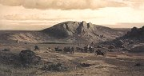
Kosárek: Selská svatba
|
Otakar Hostinskı (1847-1910)
Hostinskı se zabıval estetikou a teorií umìní. Spolu s mladımi vìdci z okruhu T.G.Masaryka se podílel na kritické analıze Rukopisu královédvorského a zelenohorského. Je autorem pojednání Darwin a drama, O realismu umìleckém nebo Smetana a jeho boj o moderní èeskou hudbu. Posmrtnì vyšla kniha Estetika.
|
Otakar Hostinskı: O realismu umìleckém
Sta� O realismu umìleckém vyšla èasopisecky roku 1890. Hostinskı se v ní sna�il obhájit realistické tvùrèí postupy. Øeší otázky tendenènosti v umìlecké tvorbì, zobrazování krásy a ošklivosti nebo vztahu umìní ke skuteènosti a srovnává realismus s idealismem.
|
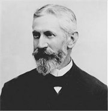
Souhlasíš s argumenty Otakara Hostinského? Proè?
Co si myslíš o realistické tvùrèí metodì?
|
Teréza Nováková (1853-1912)
Nováková se narodila i zemøela v Praze. Navštìvovala dívèí školu S.Amerlingové a Náprstkùv Americkı klub èeskıch dam. Zalo�ila èasopis �enskı svìt. S man�elem bydlela v Litomyšli. Jejich syn Arne Novák se proslavil jako literární historik. Napsala sbírku povídek Úlomky �uly (Drobová polévka), historické romány o vıjimeènıch mu�ích Jan Jílek a Drašar nebo �ivotopisnı román Jiøí Šmatlán. Vrcholnımi realistickımi romány jsou Na Librovì gruntì a Dìti èistého �ivého. Osudy dcery Karla Havlíèka Borovského popsala v próze Malomìstskı román.
Znáš nìjakou knihu Arne Nováka?
|
Teréza Nováková: Úlomky �uly
Sbírka povídek Úlomky �uly podává realistickı obraz èeského venkova. Próza Drobová polévka líèí vztahy v Sedlišti, kde �ijí dvì spøíznìné rodiny – chudí Boštíkové a bohatí Chlebounovi. Stará Chlebounka �ije u dcery Boštíkové, proto�e byla na obtí� synovi, kterı jí neposkytl ani vejminek. Všichni èekají, jestli jim pošlou od Chlebounù, kde se koná zabíjaèka, alespoò drobovou polévku. Kdy� pro ni Boštíkovi pošlou syna, dostane vynadáno a vrací se domù s prázdnou...
|
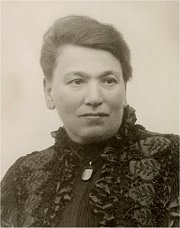
Charakterizuj jednotlivé postavy v ukázce.
Mají bohatí pøíbuzní pomáhat chudším? Proè?
Mají bohatí lidé podporovat chudé?
Je vaše rodina chudá nebo bohatá? Jak se to pozná?
|
Josef Holeèek (1853-1929)
Holeèkovım rodištìm byly Sto�ice u Vodòan, zemøel v Praze. Mìl se stát faráøem, ale �ivil se jako vychovatel v Záhøebu a pracoval jako novináø a historiograf v Èerné Hoøe. Zajímal se jihoslovanské prostøedí. Vydával èasopis Slovanské listy. Pøekládal bulharské a srbské junácké písnì. Aby mohl pøelo�it Lönnrotùv epos Kalevala, nauèil se finsky. Jeho memoáry vyšly pod názvem Pero. Rozsáhlı románovı epos Naši nedokonèil.
|
Josef Holeèek: Naši
Selská epopej Naši èítá 10 knih, ve kterıch autor líèí �ivot na jihoèeském venkovì v 60. letech 19. století. S realistickım popisem mezilidskıch vztahù, lidovıch obyèejù a zemìdìlskıch prací je v rozporu a� mıtické pojetí èinorodého èlovìka a lidského spoleèenství. Hlavními postavami románu jsou milenci Anièka a Adam, Anı�ka Bakulovic, která si hledá �enicha, a sedlák Kojan. Nìkteré èásti pøipomínají pohádku, jiné rytíøskı epos, další idealizují venkovany. Velkı dùraz Holeèek klade na vıznam køes�anství.
|
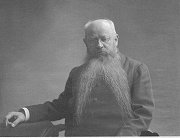
Fotografickı ateliér Langhans: Josef Holeèek
Co nového ses z této ukázky dozvìdìl/a?
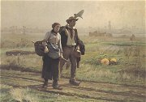
Václav Bro�ík: Na pole
|
Ignát Herrmann (1854-1935)
Herrmann pocházel z Horního Mlına u Chotìboøe a zemøel v Øevnicích u Prahy. Zalo�il humoristickı èasopis Švanda dudák (1882-1930), ve kterém vycházel jeho román U snìdeného krámu. Psal fejetony, soudnièky a tzv. nedìlní povídky. Mìstské prostøedí vylíèil v povídkovıch sbírkách Pra�ské figurky nebo Drobní lidé. Napsal humoristické romány Otec Kondelík a �enich Vejvara, Tchán Kondelík a ze� Vejvara, Vdavky Nanyky Kulichovy a co se kolem nich sebìhlo nebo Artur a Leontına. Herrmann mìl blízko k Janu Nerudovi, jeho� sebrané spisy pøipravil k vydání.
|
Ignát Herrmann: U snìdeného krámu
Pøíznaènì nazvanı román U snìdeného krámu líèí postupnı úpadek dobráckého obchodníka. Martin �emla si zaøídí kupeckı krám. Jeho stálım hostem se stane rytmistr Kyllian, kterı si nechává nalévat na sekyru. �emlovy dobroty zneu�ívá také paní Šustrová, její� dceru si nakonec vezme. Pøi svatební noci ho ale Pavlína odmítne. Kdy� �emla zjistí, �e si �ena našla milence a �e mu s tchyní vyjedly celı krám, otráví se hlavièkami zápalek. Kyllian v nestøe�eném okam�iku sma�e øadu èárek, které vyznaèují jeho obrovskı dluh...
|
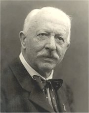
Charakterizuj Martina �emlu. Co si o nìm myslíš?
Jakı je tvùj názor na chování Kylliana?
Kterou Nerudovu povídku ti román pøipomíná? Srovnej obì díla.
Mù�e se èlovìk otrávit sirkami? Proè?
|
Karel Matìj Èapek-Chod (1860-1927)
Èapek se narodil v Doma�licích a zemøel v Praze. Pøídomkem Chod své jméno doplnil, aby se odlišil od mladého spisovatele Karla Èapka, se kterım pracoval v Národních listech. Je autorem naturalistickıch románù Kašpar Lén mstitel, Turbina, Antonín Vondrejc, Vilém Rozkoè, Jindrové nebo Experiment.
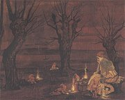
Hanuš Schweiger: Opileckı sen
|
Karel Matìj Èapek-Chod: Kašpar Lén mstitel
Naturalistickı pøíbìh vypráví o zedníkovi, kterı se rozhodne pomstít svého pøítele a jeho dceru, která se stala prostitutkou. Kašpar Lén se po návratu z vojny dozvídá, �e jeho pøítel Kryštof spáchal sebevra�du, proto�e neunesl, �e byl pøisti�en pøi kráde�i a �e jeho dceru a Lénovu milou Maøku zneuctil kupec Konopík. Kašpar se rozhodne Konopíka zavra�dit a zloèin peèlivì plánuje. Druhı díl románu se odehrává u soudu. Kašpar je souzen za vra�du, proto�e byl nalezen opilı na místì èinu. Všechny jeho odpovìdi jsou naprosto zmatené, ale �alobce si myslí, �e duševní chorobu pouze pøedstírá. Proces se vyvíjí v Lénùv prospìch, ale Maøka náhle v pominutí smyslù vyzradí, �e vra�du spoleènì plánovali...
|
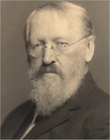
Najdi v ukázce rysy naturalismu.
Je rozdíl mezi plánováním vra�dy a skuteènou vra�dou?
Jakı je rozdíl mezi vra�dou a zabitím?
Jaké tresty za vra�du a zabití urèuje èeskı trestní zákoník?
Co jsou polehèující okolnosti?
Zabil Lén Konopíka?
Jakı trest stihl Léna, Maøku, Konopíka a Kryštofa?
|
Josef Svatopluk Machar
(1864-1942)
Machar se narodil v Kolínì a zemøel v Praze. Pracoval ve Vídni jako bankovní úøedník. Bìhem 1. svìtové války byl krátce vìznìn. Po vzniku Èeskoslovenska pracoval jako generální inspektor armády. Vìnoval se hlavnì satirické poezii a epice – cyklus Svìdomí vìkù, veršovanı román Magdalena. V tzv. sporu o Hálka vyzdvihl pøínos Jana Nerudy, k jeho� odkazu se pøihlásil. Byl autorem manifestu Èeské moderny (1895). Machar je pova�ován za tvùrce básnického realismu. Ne� se pøiklonil k èeskım fašistùm, pøátelil se s prezidentem Masarykem. Zajímavé jsou jeho vzpomínky Konfese literáta a korespondence Ètyøicet let s Aloisem Jiráskem.
Srovnej Svìdomí vìkù s obdobnımi básnickımi cykly Legenda vìkù a Zlomky epopeje.
Pøelo� do èeštiny názvy sbírek Confiteor a Tristium Vindobona.
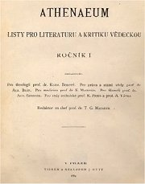
|
Macharova poezie
Macharùv verš je oproštìnı od poetismù a blí�í se próze nebo hovorovému jazyku. Ve svıch básních pranıøuje politické hašteøení, malé èeské pomìry, prázdné vlastenèení i církev. Jeho prvotina Confiteor... je osobitım vyznáním z milostné deziluze. Skeptickı pohled na svìt se ještì prohlubuje ve sbírce Tristium Vindobona I-XX. Kristùv odkaz i velké ideály Machar zpochybòuje v Golgatì. Epigramy zaøadil do Satiriconu. V epickém cyklu Zde by mìly kvést rù�e a veršovaném románu o prostitutce Lucy Magdalena zpracoval téma trpících a utlaèovanıch �en.
V cyklu epickıch básnickıch sbírek Svìdomí vìkù Machar vyzdvihuje vıznam antiky – V záøi helénského slunce, odmítá køes�anství jako Jed z Judey a s obdivem vzhlí�í k Napoleonovi – On. Cyklus uzavírá sbírka Kam to spìje.
Další realisté a jejich díla
Antal Stašek: Blouznivci našich hor, O ševci Matoušovi a jeho pøátelích, V temnıch vírech
Karel Václav Rais: Pantáta Bezoušek, Kalibùv zloèin, Zapadlí vlastenci, Vıminkáøi, Západ, O ztraceném ševci
Jindøich Šimon Baar: Jan Cimbura, Paní komisarka, Osmaètyøicátníci, Lùsy
Karel Klostermann: Ze svìta lesních samot, V ráji šumavském, Mlhy na blatech
Jan Herben: Do tøetího a ètvrtého pokolení
Alois a Vilém Mrštíkové: Rok na vsi
Josef Karel Šlejhar: Kuøe melancholik, Peklo, Vra�dìní, Rozvrat
|
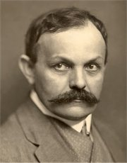
V èem se Macharova poezie liší od tvorby ruchovcù a lumírovcù? Srovnej námìty, formu i slovník dìl.
Najdi v ukázkách pøíklady ironie a satiry.
Najdi v Macharovıch básních realistické motivy.
Jak se dívá na èeské vlastence?
Co chtìl autor vyjádøit básní Na Aventinu?
„Mé koleno se zbo�nì chvìje, /
jak mìl bych kleknout v ú�asu, /
kdy� snìním duše obraz spìje /
mıch š�astnıch druhù z Parnasu. //
Hle, „vìštec" tu, tam „kní�e" trùní, /
zde „králi" tøi, tam „slavík" zas, /
a kol hlav nádhernou jim vùni /
kadidla sije modrojas.“
Kterou básnickou školu paroduje Machar v této ukázce z básnì Sloky polemické?
|
Internetové stránky
Machar: Øím
Baar: Hanı�ka a Martínek
Kramáøská píseò o rukopisnıch bojích
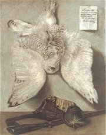
Purkynì: Sova snì�ná
|
Doporuèená èetba
Bla�íèek, Pøemysl: Epiènost a naivita v Holeèkovıch Našich, Praha 1993
Èapek-Chod, Karel Matìj: Kašpar Lén mstitel, Èeskoslovenskı spisovatel, Praha 1972
Èítanka èeského myšlení o literatuøe, Èeskoslovenskı spisovatel, Praha 1976
Herrmann, Ignát: U snìdeného krámu, Èeskoslovenskı spisovatel, Praha 1982
Herrmann, I.: Ze soudní sínì, Praha 1984
Holeèek, Josef: Naši, Vıbor z epopeje (2 svazky), Èeskoslovenskı spisovatel, Praha 1973
Hostinskı, Otakar: Studie a kritiky, Praha 1974
Hısek, Miloslav: Ignát Herrmann, Praha 1934
Cháb, Václav: Jan Herben, Praha 1947
Janáèková, Jaroslava: Román mezi modernami, Èeskoslovenskı spisovatel, Praha 1989
Jùzl, Miloš: Otakar Hostinskı, Melantrich, Praha 1980
Knob, J.: Dvojí cesta s Karlem Václavem Raisem, Praha 1964
Machar, Josef Svatopluk: Básnì, Èeskoslovenskı spisovatel, Praha 1954
Machar, J.S.: Básnì, Èeskoslovenskı spisovatel, Praha 1972
Machar, J.S.: Ètyøi knihy sonetù a jiné básnì, SNKLHU, Praha 1959
Machar, J.S.: Konfese literáta, Èeskoslovenskı spisovatel, Praha 1984
Masaryk, Tomáš Garrigue: Èeská otázka, Svoboda, Praha 1930
Novák, Arne: O Teréze Novákové, Praha 1930
Nováková, Teréza: Jan Jílek, Jiøí Šmatlán, Na Librovì gruntì, SNKLHU, Praha 1956
Nováková, T.: Úlomky �uly, NLN, Praha 2001
Polák, Karel: O Antalu Staškovi, Praha 1951
Soldan, Fedor: J.S.Machar, Melantrich, Praha 1974
Šach, V.: Karel Matìj Èapek-Chod, Praha 1949
|
Vypracuj písemnı referát o nìkteré z uvedenıch knih.
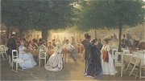
Barvitius: Ètvrtek ve Stromovce
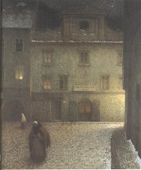
Schikaneder: Ulice naveèer
|
|